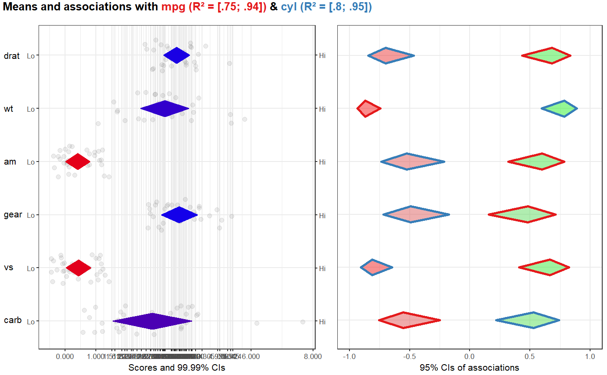

This function generates a high-level plot consisting of several diamond plots. This function is useful for estimating the relative relevance of a set of determinants of, for example, behavior. The plot in the left hand panel shows each determinant's distribution with a diamond representing the confidence interval. The right hand plot shows the determinants' associations to one or more 'target' variables, such as behavior or determinants of behavior.
CIBER(data, determinants, targets, conf.level = list(means = 0.9999, associations = 0.95), subQuestions = NULL, leftAnchors = rep("Lo", length(determinants)), rightAnchors = rep("Hi", length(determinants)), orderBy = NULL, decreasing = NULL, numberSubQuestions = FALSE, generateColors = list(means = c("red", "blue", "green"), associations = c("red", "grey", "green")), strokeColors = brewer.pal(9, "Set1"), titlePrefix = "Means and associations with", titleVarLabels = NULL, titleSuffix = "", fullColorRange = NULL, associationsAlpha = 0.5, returnPlotOnly = TRUE, drawPlot = TRUE, baseSize = 0.8, dotSize = 2.5 * baseSize, baseFontSize = 10 * baseSize, theme = theme_bw(base_size = baseFontSize), xbreaks=NULL, ...) detStructCIBER(determinantStructure, dat, conf.level = list(means = 0.9999, associations = 0.95), subQuestions = NULL, leftAnchors = rep("Lo", length(determinants)), rightAnchors = rep("Hi", length(determinants)), orderBy = 1, decreasing = NULL, generateColors = list(means = c("red", "blue", "green"), associations = c("red", "grey", "green")), strokeColors = brewer.pal(9, "Set1"), titlePrefix = "Means and associations with", titleVarLabels = NULL, titleSuffix = "", fullColorRange = NULL, associationsAlpha = 0.5, baseSize = 0.8, dotSize = 2.5 * baseSize, baseFontSize = 10 * baseSize, theme = theme_bw(base_size = baseFontSize), ...)
| data, dat | The dataframe containing the variables. |
|---|---|
| determinants | The 'determinants': the predictors (or 'covariates') of the target variables(s) (or 'criteria'). |
| targets | The 'targets' or 'criteria' variables: the variables predicted by the determinants. |
| determinantStructure | When using |
| conf.level | The confidence levels for the confidence intervals: has to be a named list with two
elements: |
| subQuestions | The subquestions used to measure each determinants. This can also be
used to provide pretty names for the variables if the determinants
were not measured by one question each. Must have the same length as
|
| leftAnchors | The anchors to display on the left side of the left hand panel. If the
determinants were measured with one variable each, this can be used to
show the anchors that were used for the respective scales. Must have the
same length as |
| rightAnchors | The anchors to display on the left side of the left hand panel. If the
determinants were measured with one variable each, this can be used to
show the anchors that were used for the respective scales. Must have the
same length as |
| orderBy | Whether to sort the determinants. Set to |
| decreasing | Whether to sort the determinants. Specify |
| numberSubQuestions | Whether or not to number the subquestions. If they are numbered, they are numbered from the top to the bottom. |
| generateColors | The colors to use to generate the gradients for coloring the diamonds
representing the confidence intervals. Has to be a named list with two
elements: |
| strokeColors | The palette to use to color the stroke of the confidence intervals for the associations between the determinants and the targets. Successive colors from this palette are used for the targets. |
| titlePrefix | Text to add before the list of target names and the proportions of explained variance for each target. This plot title also serves as legend to indicate which target 'gets' which each color. |
| titleVarLabels | Optionally, variable labels to use in the plot title. Has to be the
exact same length as |
| titleSuffix | Text to add after the list of target names and the proportions of explained variance for each target. |
| fullColorRange | If colors are specified, this can be used to specify which values,
for the determinant confidence intervals in the left hand panel,
are the minimum and maximum. This is useful if those scores are not
actually in the data (e.g. for extremely skewed distributions). If
|
| associationsAlpha | The alpha level (transparency) of the confidence interval diamonds in the right hand plot. Value between 0 and 1, where 0 signifies complete transparency (i.e. invisibility) and 1 signifies complete 'opaqueness'. |
| returnPlotOnly | Whether to return the entire object that is generated (including all intermediate objects) or only the plot. |
| drawPlot | Whether the draw the plot, or only return it. |
| baseSize | This can be used to efficiently change the size of most plot elements. |
| dotSize | This is the size of the points used to show the individual data points in the left hand plot. |
| baseFontSize | This can be used to set the font size separately from the |
| theme | This is the theme that is used for the plots. |
| xbreaks | Which breaks to use on the X axis (can be useful to override
|
| … | These arguments are passed on to |
Details are explained in Crutzen & Peters (2017).
Depending on the value of returnPlotOnly, either the
plot only (a gtable object) or an object containing most
objects created along the way (in which case the plot is stored
in $output$bla).
The plot has width and height attributes which can be
used when saving the plot.
Crutzen, R., Peters, G.-J. Y., & Noijen, J. (2017). How to Select Relevant Social-Cognitive Determinants and Use them in the Development of Behaviour Change Interventions? Confidence Interval-Based Estimation of Relevance. http://dx.doi.org/
CIBER(data=mtcars, determinants=c('drat', 'wt', 'am', 'gear', 'vs', 'carb'), targets=c('mpg', 'cyl'));